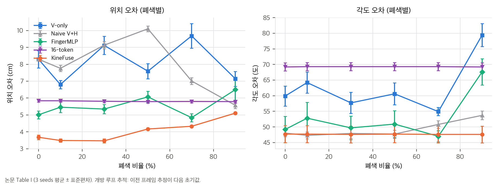
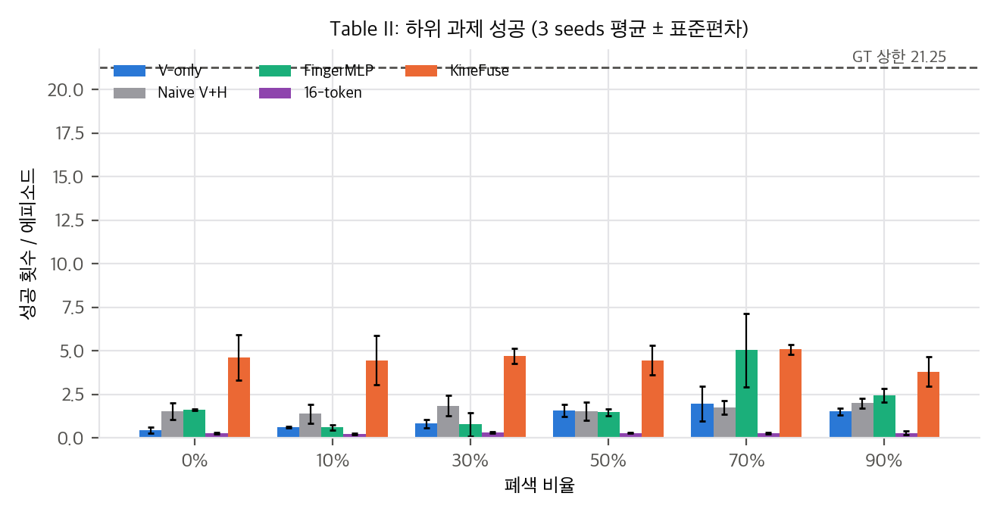
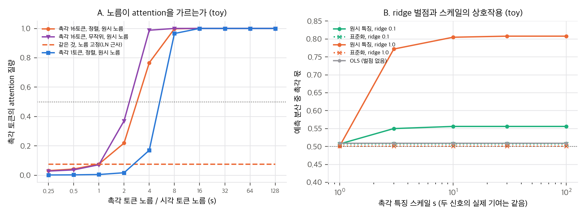
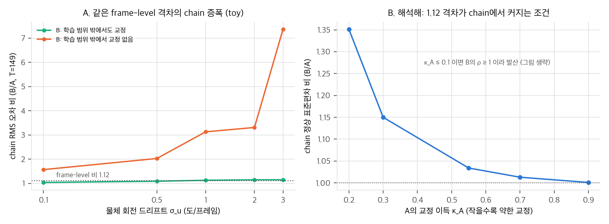

KineFuse는 다지 손의 고유감각(관절 위치·속도), 근위 F/T(3축, 손가락 4개), 손끝 이진 접촉을 사전 학습된 시각 6D 추적기(FoundationPose 정제 네트워크)에 붙여, 손가락이 가리는 물체의 자세를 추적하는 연구입니다. 저자는 손 구조(URDF)를 쓴 손가락 단위 인코더를 제안하고, 다섯 인코더 설계를 세 단계(프레임 단위, 개방 루프 추적, 하위 과제 조작)에서 비교합니다. 게재는 IROS 2026 (채택, arXiv 주석 확인)입니다. 본문 인용은 논문의 절(Sec.), 표(Table), 그림(Fig.) 번호를 씁니다. 수치 재계산은 03_analysis.md, 주장별 판정은 04_claim_verification.md에 있습니다.
Abstract는 세 가지 발견을 내세웁니다.
Abstract에는 한 가지 불일치가 있습니다. (i)은 "sequential tracking amplifies architectural differences by up to 15 times"라고 쓰지만, 본문 Sec. I(기여 2)과 Sec. V(결론)는 2배는 추적, 15배는 하위 과제 조작이라고 나눕니다. Table I의 추적 차이는 약 2배이고, 15배는 Table II(성공 횟수)에서 나옵니다. 따라서 "15배는 순차 추적에서"라는 문장은 본문과 맞지 않습니다. 프로젝트 페이지의 요약 문장도 2배(추적)와 15배(조작)를 나눠 씁니다.
FoundationPose 정제 네트워크를 고정(frozen) 백본으로 씁니다(Sec. I, 기여 설명). 렌더링된 자세 가설과 관측 크롭을 같은 CNN으로 인코딩해 L = 400 토큰(20×20), D = 512를 만듭니다.
| 설계 | 구조 | 토큰 수 |
|---|---|---|
| (a) Naive | 모든 관절 특징을 한 벡터로 이어 선형 투영 | 1 |
| (b) FingerMLP | 손가락별 MLP, 이후 손가락 간 self-attention, 구조 편향 없음 | 4 |
| (c) 16-token | 손가락 내·간 attention을 관절 단위로, 풀링 없음 | 16 |
| (d) KineFuse | 손가락 내 마스크 attention → 학습된 cross-attention 풀링(16→4) → URDF 편향 Graphormer 2층 | 4 |
| (V-only) | 촉각 없음(FoundationPose 기준선) | 0 |
Sec. III-C 첫 문장은 "five encoder designs"라고 쓰지만, 나열된 촉각 인코더는 네 개이고 V-only가 나머지 하나로 보입니다. 이 점은 본문에 명시되지 않아 확인이 필요합니다.
KineFuse의 세부 식:
"all models achieve comparable per-frame accuracy (ADD < 0.011 cm), with a best-to-worst ratio of only 1.12 times". 이 수치를 담은 표나 그림은 논문에 없습니다. Sec. IV-B 첫 문장은 Table II와 Fig. 8을 가리키지만, Table II는 조작 성공이고 Fig. 8은 정성 비교입니다. 단위(cm)도 의심스럽습니다. 0.011 cm는 0.11 mm라서 Table I의 추적 오차(3–8 cm)와 비교하면 지나치게 작습니다. 미터 단위일 가능성을 열어 둬야 합니다.
Table I(3 seeds): KineFuse의 평균 위치 오차는 4.04 cm, V-only는 8.11 cm입니다(2배). 각도 오차는 KineFuse가 47.6도, V-only가 54.9–79.4도 범위입니다. 본문은 "KineFuse만 각도 오차가 일정하다"고 씁니다. Fig. 6은 30% 가림에서 149 스텝 drift를 보여 줍니다. V-only는 계속 벌어지고, KineFuse는 20 스텝 뒤 안정된다고 합니다. Fig. 8은 같은 조건의 정성 비교이고, 주의(attention) 비율이 병진 100% 시각, 회전 75/25(시각/촉각)라고 적혀 있습니다.
Table II(성공/에피소드, 3 seeds). GT 상한은 21.25입니다. 평균은 KineFuse 4.53, FingerMLP 2.00, Naive 1.68, V-only 1.17, 16-token 0.29입니다. 본문은 "KineFuse가 V-only보다 두 RL 정책 모두에서 높다"고 쓰지만, 표는 정책 하나만 보여 줍니다.
Fig. 7은 펜슬 조작에서 각 모델의 평균 위치 오차를 RL 정책의 잡음 허용 곡선 위에 얹습니다. 저자는 "오차가 허용 범위를 넘으면 성공이 떨어진다"고 해석합니다. 그러나 16-token(위치 오차 5.8 cm)은 Naive(위치 오차 8 cm)보다 성공이 낮습니다. 위치 오차만으로는 순서가 설명되지 않습니다(03_analysis.md §2).
누적 drift가 주요 병목이고, 성공은 GT 상한의 "9%"로 떨어진다는 문장이 있습니다(Sec. IV-C). 표 값으로는 KineFuse가 평균 21%입니다. 9%와 맞는 값은 V-only 70% 칸(1.97/21.25 = 9.3%) 정도뿐입니다.
고유감각 jitter와 실패 횟수를 proxy로 쓰고, AprilTag 기준으로 Table III를 냅니다. Table III는 한 궤적의 다섯 시점(0, 67, 135, 202, 269)입니다. 시드도 궤적 수도 없습니다. Fig. 10 주석은 AprilTag를 초기 GT 자세로만 쓴다고 해서, 이후 시점의 기준이 무엇인지 불분명합니다.
04_claim_verification.md C16).03_analysis.md §5, §6의 toy가 그 조건을 봅니다).03_analysis.md §3).구조화된 손가락 토큰이라는 설계 아이디어는 명확하고 구현이 어렵지 않습니다. 그러나 평가 설계와 수치 보고에 해결되지 않은 불일치가 많습니다(15배의 위치, 격차 확대 주장, 9%, "두 정책", 고정 백본). 공개 코드가 없어서 검증할 수 없는 항목도 많습니다. 결과를 인용할 때는 Table I의 2배(추적)와 Table II의 15배(조작)를 따로 적는 편이 안전합니다.
모든 수치는 analysis/table_check.py(표 값 재계산, 결과 table_check_results.json), analysis/norm_dominance_toy.py(norm_dominance_toy_results.json), analysis/drift_toy.py(drift_toy_results.json)로 CPU, 단일 스레드에서 다시 만들었습니다. 논문 표 값은 paper/paper.txt와 PDF 렌더링을 눈으로 대조했습니다. 표준편차는 표본 표준편차(ddof=1)로 보았고, ddof=0일 때도 결론이 같은지 확인했습니다.

논문 Table I 값으로 그린 그래프. 점은 3 seeds 평균, 막대는 표준편차.
| 설계 | 위치 평균 (cm) | 각도 평균 (도) |
|---|---|---|
| V-only | 8.11 | 62.8 (54.9–79.4) |
| Naive V+H | 7.98 | 49.2 (47.3–53.7) |
| FingerMLP | 5.54 | 52.9 (47.0–67.6) |
| 16-token | 5.81 | 69.3 (69.2–69.3) |
| KineFuse | 4.04 | 47.7 (47.6–47.7) |
| 기준선 | 0% 격차 (cm) | 90% 격차 (cm) |
|---|---|---|
| V-only | 4.62 | 2.03 |
| Naive V+H | 4.62 | 0.46 |
| 16-token | 2.16 | 0.68 |
| FingerMLP | 1.33 | 1.39 (사실상 같음) |
Fig. 7은 평균 위치 오차를 눈으로 읽으면 V-only ≈ 8.3, Naive ≈ 8.3, FingerMLP ≈ 5.0, 16-token ≈ 5.8, KineFuse ≈ 3.6입니다. 여섯 수준의 평균(4.04 등)과는 KineFuse가 0.4 cm 어긋납니다. 0–30% 평균은 V-only 8.07, Naive 8.40, FingerMLP 5.27, 16-token 5.83, KineFuse 3.55로 눈 판독에 더 가깝습니다. 어떤 부분집합을 그렸는지는 본문에 없습니다.
KineFuse와 기준선 네 개의 쌍별 비교를 가림 수준(6) 칸마다 하고, 24 검정을 Holm으로 보정했습니다.
위치 차이는 seed를 넘어 비교적 안정적입니다. 각도 오차에는 유의성 검정을 하지 않았습니다. seed 표준편차가 2.7–5.1도로 커서 3 seeds로는 검정력이 낮을 것입니다.

논문 Table II 값으로 그린 그래프. 점선은 GT 상한 21.25.
| 설계 | 평균 성공 | GT 대비 (%) |
|---|---|---|
| GT | 21.25 | 100 |
| KineFuse | 4.53 | 21.3 |
| FingerMLP | 2.00 | 9.4 |
| Naive V+H | 1.68 | 7.9 |
| V-only | 1.17 | 5.5 |
| 16-token | 0.29 | 1.3 |
01 §1).본문은 누적 drift가 성공을 GT 상한의 9%로 떨어뜨린다고 씁니다. KineFuse 평균은 21%, 칸별로는 18–24%입니다. 9%에 가까운 값은 FingerMLP 0%(7.7%), Naive 90%(9.4%), V-only 70%(9.3%)뿐이어서, 어떤 칸을 말하는지 특정되지 않습니다.
24 검정 중 Holm 보정 후 유의한 칸은 3개뿐입니다(V-only 30%: p = 0.021, Naive 70%: p = 0.020, 16-token 70%: p = 0.029). KineFuse의 0%와 10% 칸은 SD가 1.3–1.4라서 평균이 크게 달라도 3 seeds로는 판별이 약합니다.
V-only 성공은 0%의 0.46에서 70%의 1.97로 오릅니다(Spearman ρ = 0.83, n = 6, p = 0.042). 폐색이 실패를 늘린다는 가정과 반대입니다. 이 칸들의 seed 편차(1.0)도 커서 노이즈일 가능성이 큽니다. 어쨌든 조작 성공 지표가 폐색 강도를 잘 반영하지 않는다는 신호이므로, 15배 주장은 이 지표의 신뢰도에 기댑니다.
설계 5개의 평균에서 각도 오차 순위와 성공 순위의 Spearman 상관은 ρ = −0.9(p = 0.037), 위치 오차와는 **ρ = −0.7(p = 0.19)**입니다. 위치 평균 순위는 KineFuse(4.04) < FingerMLP(5.54) < 16-token(5.81) < Naive(7.98) < V-only(8.11)입니다. 16-token은 위치 오차가 세 번째로 낮지만 성공은 가장 낮습니다. 따라서 Fig. 7의 "위치 오차 → 성공" 해석은 이 데이터로 지지되지 않고, 회전 오차가 더 나은 설명 변수로 보입니다. 다만 설계가 5개뿐이라 이 상관은 가설 수준입니다.
16-token의 위치 오차는 5.79–5.84 cm(변동계수 0.004), 각도는 69.2–69.3도, 성공은 0.23–0.33입니다. 가림이 0%에서 90%로 변해도 출력이 거의 변하지 않습니다. 시각 입력을 거의 쓰지 않거나, 학습이 수렴하지 않은 상수 출력에 가깝다는 뜻입니다. 이 경우 "관절 단위 토큰이 시각을 누른다"는 해석보다 학습 실패 해석이 먼저 검토되어야 합니다(04_claim_verification.md C14). 논문은 이 설계의 학습 곡선이나 검증 손실을 보고하지 않습니다.
| 시점 (프레임) | 0 | 67 | 135 | 202 | 269 |
|---|---|---|---|---|---|
| 위치 V-only (mm) | 11.9 | 78.2 | 108.2 | 95.3 | 96.6 |
| 위치 KineFuse (mm) | 1.4 | 17.4 | 35.9 | 58.1 | 85.4 |
| 회전 V-only (도) | 6.7 | 57.7 | 130.3 | 177.4 | 94.3 |
| 회전 KineFuse (도) | 2.5 | 30.8 | 63.5 | 86.6 | 131.5 |
01 §4.2 (6))."촉각을 0으로 두면 V-only보다 2.3배 낫다"는 수치는 논문에 표가 없습니다. 참고로 0–30% 평균의 V-only/KineFuse 비는 8.07/3.55 = 2.27입니다. 영 입력 실험 결과가 KineFuse 전체 모델과 같다고 했으므로, 이 값이 그 실험을 가리킬 가능성이 있습니다. 확인할 방법은 없습니다.
프레임 t의 정제를 선형 근사하면 교란 d_t = e_{t−1} − u_t(u_t는 물체 회전 드리프트)에 대해
e_t = (1 − κ) d_t + ε_t, ρ ≡ 1 − κ
입니다. 정상 상태 분산은
Var(e) = (ρ² σ_u² + σ_ε²) / (1 − ρ²)
입니다. 두 설계 A, B의 프레임 단위 이득 비를 (1−κ_B)/(1−κ_A) = 1.12로 고정하면, chain 표준편차 비는 κ_A가 작을수록 커지고 ρ_B ≥ 1에서 발산합니다.
| κ_A | ρ_A | ρ_B | chain std 비 (B/A) |
|---|---|---|---|
| 0.9 | 0.10 | 0.112 | 1.00 |
| 0.55 | 0.45 | 0.504 | 1.03 |
| 0.3 | 0.70 | 0.784 | 1.15 |
| 0.2 | 0.80 | 0.896 | 1.35 |
| ≤ 0.1 | ≥ 0.90 | ≥ 1.008 | 발산 |
해석: 프레임 단위에서 12%인 격차는, 교정이 약한 시스템에서는 chain에서 35%로 커지고, 교정 이득이 1에 가까워지면 발산합니다. 즉 프레임 평가는 chain의 안정성 여유(1−ρ)를 보지 못합니다. 이 식은 논문의 것이 아니라 가정 모델입니다. 논문의 1.12→2배→15배가 이 메커니즘인지는 확인되지 않습니다.
flat 토큰 concat 뒤 한 층 attention에서 질의 q, 키 k = W_k x의 로짓은 (W_k x)·(W_q q)/√d입니다. 질의를 고정하면 로짓은 ‖x‖에 선형으로 커지고, 질의도 같은 특징에서 나오면 ‖x‖²로 커집니다. 따라서 노름 비가 attention 질량을 결정합니다. 시퀀스 평균(식 4)만 본다면 촉각 토큰 K개의 질량은 K/(N+K)입니다.
| K | 개수 기준 질량 (N=400) |
|---|---|
| 1 | 0.25% |
| 4 | 0.99% |
| 16 | 3.85% |
개수만 보면 16토큰이 4토큰보다 촉각 몫이 커야 합니다. "관절 토큰이 시각을 누른다"는 설명은 개수가 아니라 노름에 기대야 합니다. 논문은 노름을 보고하지 않으므로, 이 주장은 검증할 수 없습니다(04_claim_verification.md C18).
촉각 특징이 x_h = s·z_h(z_h는 표준화)일 때, 학습 가중치는 w_h = w̃_h/s로 바뀝니다. 벌점 λ‖w‖²는 λ‖w̃_h‖²/s²가 됩니다. 즉 표준화 좌표에서 촉각 가중치의 유효 벌점은 λ/s²입니다. 스케일이 크면 벌점이 약해져 촉각 몫이 커집니다. 벌점이 없는 OLS에서는 가중치가 스케일을 보상해서 몫이 변하지 않습니다. 이 두 결론은 아래 toy B에서 확인됩니다.

norm_dominance_toy 결과. A: 촉각 토큰 노름 대 attention 질량, B: ridge 벌점에서 촉각 몫. 가정 모델이며 논문 실험이 아닙니다.

drift_toy 결과. A: 같은 프레임 격차(1.12)의 chain 증폭, B: 해석해. 가정 모델이며 논문 실험이 아닙니다.
toy가 보여 주는 것은 "프레임에서 같아 보이는 두 설계가 chain에서 갈라지는 조건" 입니다. (i) 학습 교란 범위 밖의 상태에서 교정 능력이 다르거나, (ii) 교정 이득이 1에 가까워 chain 여유가 작을 때입니다. 논문이 어느 쪽인지는 구분할 자료가 없습니다.
목적. 논문의 "촉각을 0으로 두면 V-only보다 2.3배 낫다"(§4)는 촉각의 정보 효과인지, 관절 위치가 물체 자세를 이미 알려 주는 효과인지 구분되지 않습니다(04 C16). 가정 모델에서 두 채널을 따로 제로화해, 제로화 대조가 어떤 정보를 빼는지 봅니다. 논문 수치를 재현하지는 않습니다.
설정 (가정).
analysis/extra_proprio_zero.py, 결과 analysis/extra_proprio_zero_results.json).결과. 각도 RMSE(도, 평균 ± 표준편차, 시드 5개, 가림 수준 평균).
| σ_δ (도) | V | V+H | V+P | V+H+P | V+H+P, 촉각 0 | V+H+P, 고유감각 0 |
|---|---|---|---|---|---|---|
| 0 | 11.44 ± 0.25 | 11.44 ± 0.25 | 0.06 ± 0.01 | 0.06 ± 0.01 | 0.06 ± 0.01 | 26.01 ± 0.06 |
| 2 | 11.44 ± 0.25 | 11.44 ± 0.25 | 1.91 ± 0.11 | 1.71 ± 0.08 | 1.90 ± 0.11 | 25.58 ± 0.10 |
| 8 | 11.52 ± 0.26 | 11.47 ± 0.26 | 6.60 ± 0.33 | 4.53 ± 0.21 | 6.90 ± 0.40 | 23.11 ± 0.34 |
| 20 | 11.84 ± 0.30 | 11.60 ± 0.28 | 10.63 ± 0.38 | 8.29 ± 0.38 | 12.31 ± 0.78 | 17.08 ± 0.71 |
σ_δ = 8°에서 가림 수준별 RMSE(시드 0 한 번): V는 5.4°(가림 0)에서 16.9°(가림 0.9)로 오르지만, 촉각을 0으로 둔 모델은 7.2–7.5°로 가림과 무관합니다.
결론.
04 C16의 판단과 같은 결론입니다.목적. §5.2와 §6.1의 toy가 가정한 "노름이 attention 질량을 정한다"는 경로를, 소형 융합 모델을 실제로 학습하면서 토큰 노름과 attention 질량을 기록해 확인합니다.
설정. analysis/extra_token_norm.py (torch, CPU 4스레드, 시드 3, 약 14.5분. 목표 10분을 넘었으나 상한 20분 안에서 끝났습니다).
결과. 시드 3개 평균, 시작 스텝 → 1500 스텝.
| 구조 | 스케일 | 정규화 | 관절 계열 attention 질량 | 개수 몫 | 노름 비(관절/시각) | 시험 MSE(끝) |
|---|---|---|---|---|---|---|
| flat | 1 | 없음 | 0.198 → 0.321 | 0.200 | 0.77 → 0.82 | 0.0022 |
| flat | 1 | LN | 0.196 → 0.408 | 0.200 | 0.77 → 0.81 | 0.0009 |
| flat | 10 | 없음 | 0.269 → 0.303 | 0.200 | 5.29 → 5.01 | 0.0013 |
| flat | 10 | LN | 0.197 → 0.280 | 0.200 | 5.29 → 5.51 | 0.0056 |
| finger | 1 | 없음 | 0.058 → 0.181 | 0.059 | 0.72 → 0.89 | 0.0033 |
| finger | 1 | LN | 0.057 → 0.344 | 0.059 | 0.72 → 0.74 | 0.0019 |
| finger | 10 | 없음 | 0.073 → 0.171 | 0.059 | 4.63 → 4.43 | 0.0019 |
| finger | 10 | LN | 0.057 → 0.209 | 0.059 | 4.63 → 4.93 | 0.0046 |
결론.
한계. 합성 데이터(관절이 자세에 강하게 정보를 주고 시각은 약함)이며 실제 KineFuse가 아닙니다. 주의 층은 2개, 학습은 1500 스텝, 시드 3개, 정규화 2종과 스케일 2종만 봤습니다. 노름 지배가 임계 노름 비(약 2–4배, §6.1)를 넘을 때 생기는지는 이 설정에서 확인하지 못했습니다. 실제 모델의 노름과 질량은 기록하지 않은 상태입니다.
공식 코드가 없어서 코드 대조(04_code_verification) 대신 주장 검증을 합니다. 공개 저장소 cold-young/kine-fuse는 프로젝트 페이지와 README뿐입니다(02_prior_work.md §5). 판정은 논문 본문, 표, 그림 캡션, 이 폴더의 재계산(03_analysis.md)을 근거로 합니다.
판정 기호: 재현 = 표 값으로 다시 계산해 맞음, 부분 = 일부만 맞음, 불일치 = 논문 안의 다른 값과 모순, 확인 불가 = 필요한 자료가 논문에 없음.
licenses/by-nc-nd/4.0/)./License와 dc:rights 모두 http://creativecommons.org/licenses/by-nc-nd/4.0/입니다.publish/)과 report_public.pdf에는 넣지 않습니다. 게시본의 그래프는 논문 수치와 toy로 직접 그린 것만 씁니다..gitignore에 넣지 않고 저장소에 둡니다.| ID | 논문 주장 (위치) | 판정 | 근거 |
|---|---|---|---|
| C1 | 프레임 단위 ADD < 0.011 cm, 최고/최저 비 1.12 (Sec. IV-B) | 확인 불가 | 이 수치를 담은 표나 그림이 없습니다. Sec. IV-B가 가리키는 Table II·Fig. 8은 다른 내용입니다. 단위도 의심됩니다(0.11 mm는 Table I의 3–8 cm와 비교해 지나치게 작음, 미터일 가능성). |
| C2 | 순차 추적에서 차이가 2배로 커진다 (Sec. I 기여 2, Sec. IV-B) | 재현 | Table I: V-only/KineFuse = 8.11/4.04 = 2.01. Naive/KineFuse = 1.97. |
| C3 | 순차 추적에서 차이가 최대 15배 (Abstract (i)) | 불일치 | 15배는 Table II 조작 성공(Sec. I 기여 2, Sec. V, 프로젝트 페이지)에만 나옵니다. 추적은 2배입니다. |
| C4 | 하위 과제에서 15배 (Sec. I, Sec. V) | 재현(조건부) | KineFuse/16-token 평균 비 15.8, 칸별 12.7–19.4. 기준선은 가장 낮은 16-token이어서 "최고/최저"입니다. 칸별 95% 구간은 8–29배로 넓습니다. |
| C5 | KineFuse 평균 위치 오차 4.04 cm, V-only 8.11 cm (Sec. IV-B) | 재현 | Table I 평균 4.042, 8.105. |
| C6 | 모든 가림 수준에서 KineFuse가 위치 오차 최저 (암묵) | 재현 | 6/6 수준 모두 최저. |
| C7 | 0–20% 가림에서 모든 모델이 비슷하다 (Sec. IV-B) | 불일치 | 0%에서 V-only 8.30, KineFuse 3.68 (2.3배 차이). 10%도 6.80 대 3.49입니다. |
| C8 | 각도 오차가 KineFuse만 일정하다 (Table I 캡션, Sec. IV-B) | 불일치 | 16-token(69.2–69.3도), Naive(47.3–53.7도)도 거의 일정합니다. |
| C9 | KineFuse 각도 오차 47.6도 ± 0.1 (Sec. IV-B) | 부분 | 평균 47.65는 맞습니다. "± 0.1"은 가림 수준 간 흔들림이고, seed 표준편차는 2.7입니다. |
| C10 | V-only 각도 오차 54.9–79.4도 (Sec. IV-B) | 재현 | Table I. |
| C11 | 고 가림에서 haptic 기여가 커져 격차가 벌어진다 (Sec. IV-B) | 불일치 | 네 기준선 모두 0%→90%에서 격차가 줄어듭니다(V-only 4.62→2.03, Naive 4.62→0.46, 16-token 2.16→0.68). |
| C12 | 조작 성공에서 KineFuse가 V-only보다 "두 RL 정책 모두"에서 높다 (Sec. IV-C) | 불일치(내부) | Table II와 본문은 정책 하나("a separately trained RL policy")만 보고합니다. |
| C13 | 누적 drift가 성공을 GT의 9%로 떨어뜨린다 (Sec. IV-C) | 불일치 | KineFuse 평균 21.3%, 칸별 18–24%. 9%에 맞는 칸이 특정되지 않습니다. |
| C14 | 16-token이 전 수준에서 같은 낮은 성능 (Table I·II) | 확인 불가 (의심) | 위치 오차 변동계수 0.004, 성공 0.23–0.33. 출력이 시각 입력에 거의 반응하지 않습니다. 학습 실패인지 구조 효과인지 구분할 자료가 없습니다. |
| C15 | 위치 오차가 허용 범위를 넘으면 성공이 떨어진다 (Fig. 7, Sec. IV-C) | 부분 | 16-token(5.8 cm)이 Naive(8 cm)보다 성공이 낮아 위치 오차 순서와 맞지 않습니다. 각도 오차 순위와 성공 순위는 ρ = −0.9입니다(n = 5). |
| C16 | 영 입력(촉각 0) 추론에서도 V-only보다 2.3배 좋다 (Sec. IV-D) | 확인 불가 | 표나 수치가 없습니다. 0–30% 부분집합 비 2.27과 맞아 떨어지지만 실험과의 연결은 추정입니다. 또한 V-only에는 1단계 사전 학습이 없어서 "구조 효과"와 "학습 절차 효과"가 분리되지 않습니다. |
| C17 | 학습된 교차 모달 게이팅: 병진은 시각만, 회전은 헤드 하나가 촉각 (Abstract (ii), Fig. 8) | 확인 불가 | 근거는 Fig. 8 캡션의 백분율(100%, 75/25)뿐입니다. 헤드 수와 측정 방법이 없습니다. 본문 Sec. III-D는 "게이트"를 쓰지 않았다고 해서 "게이팅"의 뜻이 흐려집니다. |
| C18 | flat과 관절 단위 표현이 norm dominance로 시각을 억누른다 (Abstract (iii)) | 확인 불가 | 노름, attention 질량, 헤드별 기여를 보고하지 않습니다. toy로는 임계 노름 비가 2–4배 정도임을 보였지만(03 §6.1), 실제 모델의 값은 알 수 없습니다. |
| C19 | 4토큰이 flat과 관절 단위보다 낫다 (Abstract (iii), Table II) | 재현(표 기준) / 확인 불가(원인) | 성공 평균: 4토큰 KineFuse 4.53 > FingerMLP(4토큰) 2.00 > Naive(1토큰) 1.68 > 16토큰 0.29. 원인 설명은 C14와 같은 이유로 확인되지 않습니다. |
| C20 | 개선된 추적이 재배향 성공을 높인다 (Sec. IV-C) | 재현(조건부) | 성공 순서가 추적 오차 순서와 대체로 맞습니다. 다만 한 정책, 3 seeds이고, Holm 보정 후 유의한 칸은 24개 중 3개입니다. |
| C21 | 실환경에서 KineFuse가 AprilTag 기준 오차가 낮다 (Sec. IV-E, Table III) | 부분 | 위치는 다섯 시점 모두 낮습니다. 회전은 네 시점에서 낮고, 시점 269에서 역전(131.5 대 94.3도)합니다. 한 궤적, 시드 없음입니다. |
| C22 | 고정(frozen) 시각 백본 (Sec. I) | 불일치 | Sec. III-E는 2단계 이후 모든 파라미터를 학습한다고 씁니다. |
| C23 | 다섯 인코더 설계 비교 (Sec. III-C 첫 문장) | 불일치(세기) | 나열된 촉각 설계는 네 개이고 V-only를 더해도 다섯입니다. 설명이 없어 설계 수를 본문으로 확인할 수 없습니다. |
| C24 | Fig. 6: KineFuse는 20 스텝 뒤 안정 | 부분 | 눈 판독으로 KineFuse 위치 오차가 약 4 cm에서 140 스텝 무렵 약 6 cm까지 서서히 오릅니다. 완전히 평평하지 않습니다. |
| C25 | 촉각 0 입력에서 추적이 "거의 같다" (Sec. IV-D) | 확인 불가 | C16과 같습니다. |
02 §5).| 작업 | 가능 여부 | 근거 |
|---|---|---|
| 표 재계산과 유의성 | 가능, 완료 | table_check.py, CPU 0.3초 |
| 노름, 드리프트 toy | 가능, 완료 | numpy, 각 수 초 |
| FoundationPose 추론 | 불가 | CUDA 확장 필요 |
| IsaacLab 데이터 생성 | 불가 | Isaac Sim은 NVIDIA RTX GPU 필요 |
| 소형 융합 모델 학습(합성 데이터) | 조건부 | torch(MPS) 설치 승인 필요. 설치 전 목록을 보여 줘야 함 |
| 실물 손 재현 | 불가 | 하드웨어 없음 |
beyond_implicit_force의 전류 대리값으로 대신할 수 있지만, 검증은 별도로 필요합니다.한 줄 판정: 공식 재현은 불가능하고, 이 맥에서는 계산 검증까지만 가능합니다. 아이디어 재구현은 구조 자체는 쉽지만 촉각·자세 데이터 확보가 어려워 조건부입니다.
table_check.py 상수).table_check.py로 재계산했습니다.norm_dominance_toy.py, drift_toy.py의 가정 모델로만 시험했습니다. 논문 실험을 재현한 것이 아닙니다.| 갈래 | 대표 연구 | KineFuse가 가져온 것 |
|---|---|---|
| 시각 6D 자세 추적·추정 | FoundationPose [4], BundleSDF [5], SAM-6D [19] | 고정 시각 백본(FoundationPose 정제 네트워크), 렌더-비교 입력 구성 |
| 시각·촉각 in-hand 자세 | Rezazadeh et al. [7] (HGNN, ICRA 2023), Mack et al. [6] (factor graph, ICRA 2025), V-HOP [22] (RSS 2025), NeuralFeels [15], VINT-6D [14] | 촉각을 노드·토큰으로 넣는 방식, 접촉의 손–물체 보조 손실 [22] |
| 촉각을 평면 벡터로 넣기 | Lin et al. [18] (visuotactile, two hands) | Naive·FingerMLP 기준선의 출처. 논문은 구조가 없는 flat 융합으로 봅니다 |
| 손 구조의 그래프 표현 | GET-Zero [31] (embodiment bias), Graphormer [30], Rampášek et al. [29] | URDF 홉 거리·대향·인접 편향, 그래프 transformer 층 |
| 가림·접촉 기반 손 조작 | Chen et al. [9], Qi et al. [11], Wang et al. [10] | 가림 문제의 동기. 이 계열은 손 자세 전환(finger gaiting)으로 가림을 피함 |
| 힘·토크 센서가 있는 손 | Park & Hwang [35] (저자 그룹의 3축 F/T 손) | 실험 하드웨어 |
| 구성 요소 | 출처 | 이 논문에서 새로운 점 |
|---|---|---|
| 관절 토큰화(MLP + LN) | 일반 관행 | 관절 4 스텝 이력을 28차원으로 펴서 토큰화(C는 명시되지 않음) |
| 손가락 내 마스크 attention | 블록 대각 마스크 (일반 관행) | F/T가 있는 원위 관절에서 근위 관절로 정보 전달이라는 목적 |
| 손가락 풀링 16→4 | 학습 질의 cross-attention (일반 관행) | 손가락마다 하나의 요약 토큰, 토큰 수를 4로 고정 |
| URDF 편향 Graphormer | Graphormer [30], GET-Zero [31] | 손가락 쌍의 홉 거리·대향·인접을 편향으로 씀 |
| 6D 회전 표현 | Zhou et al. [33] | 없음 |
| ADD 손실, 접촉·관통 보조 | ADD 일반 관행, V-HOP [22] | λ 값은 비공개 |
| 2단계 학습(촉각 사전 학습 → 결합 미세조정) | 본문에 출처 없음 | 2단계 중 시각 백본을 3 epoch 고정하는 일정 |
| 폴더 | 관계 | KineFuse에 주는 것 |
|---|---|---|
restacvla/ (ResTacVLA, arXiv:2607.03387) |
시각·촉각 융합에서 한 모달리티가 다른 쪽을 누르는 문제(modality collapse)와 불확실성 게이트 | 게이트를 학습하려다 포화되는 현상은 두 논문이 공통으로 겪습니다. "gating"의 정의를 주의 질량인지 학습 게이트인지 구분하는 기준을 빌려 옵니다 |
reactive_grasp/ (arXiv:2609.30082) |
손 전체 링크의 접점을 물체 메쉬·자세·관절각만으로 계산하고 접촉력 분배 QP를 푸는 제어기 | 촉각 없이 손 구조로 접촉을 추정할 수 있다는 점. KineFuse의 URDF 편향과 같은 재료(손 기하)를 쓰지만 목적이 다릅니다 |
beyond_implicit_force/ (arXiv:2607.14578) |
관절 위치 오차 δ와 서보 전류가 힘을 대신하는지 시험 | 고유감각에서 힘을 읽으면 생기는 "구동과 감지의 혼동"을 같은 방식으로 의심할 수 있습니다. KineFuse의 고유감각 누수 문제(01 §4.2 (1))와 같은 뿌리입니다 |
chord/ (arXiv:2607.00033) |
다지 손의 접촉 wrench 행렬과 지지 함수 보상 | 접촉 정보를 손가락 단위로 모아 쓰는 방식의 대안 |
flashdexretarget/ (arXiv:2610.01849) |
사람 손–물체 시연을 로봇손 궤적으로 바꾸는 정책 | 손 기하가 다른 로봇손으로 옮길 때 URDF 편향이 얼마나 쓸모 있는지의 질문 |
| CONTACT (arXiv:2603.08560) | 단순 촉각 융합이 오히려 나쁘다는 결과를 다루는 것으로 알려진 연구 | flat 융합 열세와 같은 방향의 주장입니다. 본 분석에서 원문은 확인하지 않아 인용은 주장의 요지로만 둡니다 |
01 §4.1).| 저장소 | 무엇 | 공식? | 라이선스 | 별 | 마지막 커밋 | 비고 |
|---|---|---|---|---|---|---|
cold-young/kine-fuse |
논문 저장소. 실제로는 프로젝트 페이지 소스(index.html)와 README뿐 | 공식(저자 계정) | 없음(GitHub license null) | 1 | 2026-10-15, 072f40d |
코드, 가중치, 데이터, 학습 스크립트 없음. 저장소 생성 2026-03-08 |
NVlabs/FoundationPose |
시각 백본(정제 네트워크)의 원저 | 원저자 공식 | NOASSERTION. LICENSE 파일은 "Copyright NVIDIA, All rights reserved" 형식이라 상업 이용 조건을 원문으로 확인해야 합니다 | 3,689 | 2026-04-29, a1b694b |
논문의 시각 백본. CUDA 필요 |
isaac-sim/IsaacLab |
시뮬레이션과 데이터 수집 | 공식 | NOASSERTION(SPDX 미인식, 원문 확인 필요) | 8,602 | 2026-11-09, 4cfdfcf |
논문의 데이터 생성 환경. GPU 필요 |
microsoft/Graphormer |
Graphormer 층 원 구현 | 공식 | MIT | 2,486 | 2026-11-04, c55f569 |
편향 계산 방식의 원출처 |
real-stanford/get_zero |
GET-Zero, embodiment bias 설계 | 공식 | 없음 | 63 | 2026-03-05, 279652d |
URDF 편향의 설계 원출처 |
검색했지만 공식 코드를 찾지 못한 것: V-HOP [22], Rezazadeh et al. [7]의 HGNN. gh search repos "KineFuse"는 cold-young/kine-fuse 하나만 돌려줬습니다. 하드웨어 논문 [35](저자의 F/T 손)의 저장소는 검색하지 않았습니다.
결론: 공개된 실행 가능한 코드는 없습니다. 저장소는 프로젝트 페이지이므로 repo/ clone은 남기지 않았고, 코드 대조는 04_claim_verification.md에서 주장 수준으로만 합니다.